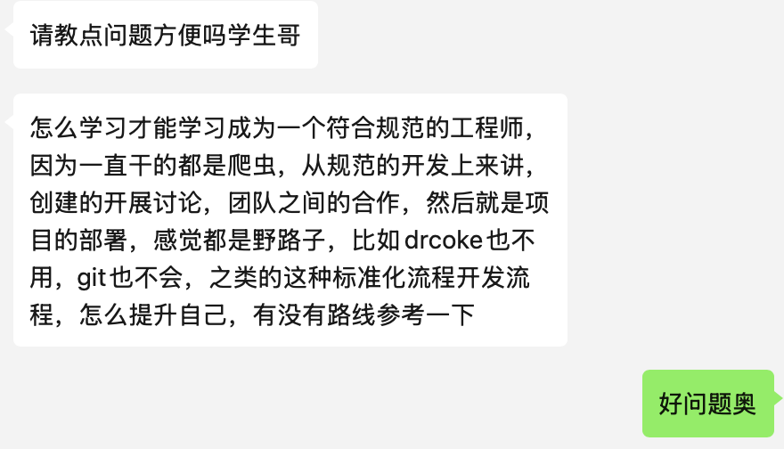

代码写的垃圾是会被打的

前言
最近也是感受到了语言的魅力，所以说这个标题也不算标题党，因为说会被打又没说哪一天会被打，谁会被打，地球上这么多人总有人会被打的，就像我说24小时内更新，有没有说哪一天的24小时内会更新。
好了言归正传，这一集我们就来探讨下如何将代码写好，具体的内容呢都是我的个人观点和实践，大家有更好的思路也可以在评论区分享出来。
我的粉丝肯定很多类型，比如说前端，python后端，爬虫，以及不是程序员的群体。python和爬虫我觉得应该占大部分，然后爬虫的话其实又分为很多种类，比如说自动化的，逆向的，通用爬虫的，爬虫系统的很多种，不像后端一样，写接口计算这些比较专一，现有的规范也比较多。爬虫有的工作比较专，只负责逆向接口，可能就是把接口逆向出来，提供一个接口给后端调用或者是自己持续采集存到数据库就可以了，有的爬虫是很多零散的小任务，自动化翻几页数据存到json里excel就可以了，还有的爬虫是做通用爬虫，做成一个特定需求的系统。但其实写的还是python代码，做的事团队协作的事情，是编程的话，有很多思想和规范都是共通的。
所以我们这集来看看python和数据采集怎么把代码写好点吗？其实是写代码，我觉得都是需要遵守规范的，可以去github找自己对应语言的规范。
google搜索：内容目录 — Google 开源项目风格指南
github搜索：https://github.com/search?q=python%E4%BB%A3%E7%A0%81%E8%A7%84%E8%8C%83&type=repositories
下面就分享一点我的浅浅的认知，上面两个文档我还没来得及看：
写过三遍以上的函数，自已一直去旧项目里copy的代码，思考可不可以封装成工具库，或者写笔记里下次使用复制粘贴更方便。
针对性学习，每个小知识点都搜教程学学，最重要的是知行合一，在平时的开发中使用到，给自己定好规范，慢慢拓展。这样在后面融合团队的时候不至于手忙脚乱。比如说：markdown，git操作，这些都是程序员的基本功。
平时写代码也要写好函数注释，养成用工具对代码进行格式化。
不要总觉得这个没必要那个没必要，编程水平不是一朝一夕就变强了，就是从细节一点点改进，只有一点点思考怎么把代码写好，后面才会真的写好。
个人技能：
团队规范：
python代码规范：
- requirements.txt（不写这个的话，用哪些三方库和对应的版本不知道有时候很难把项目跑起来）
- black
- flake8，pylint
- pre-commit
black 文件名
将当前路径所有文件格式化
black .
flake8 .
pylint .
爬虫：
- scrapy，scrapy中间件
- Selenium，DrissionPage
- xpath/bs4
后端：
- docker
- redis，mysql，ElasticSearch
- linux【基础命令】
- fastapi【简单轻便高性能主流】
大神：
gpt,我是一名python开发+数据采集工程师，因为代码写的很垃圾没有规范而被同事打了，请问我该如何写出好的python代码，如何养成习惯，会使用哪些工具或者规范
被“打”可还行 😂，不过确实写出规范、可读性强的 Python 代码很重要，不然不仅自己后期维护痛苦，团队协作时也容易出问题。以下是一些建议，帮助你提高代码质量和养成好习惯：
1. 遵循编码规范（PEP 8）
Python 社区的编码风格指南是 PEP 8，你可以使用 flake8、black、pylint 等工具来检查并格式化代码。例如：
pip install black flake8 pylint
black your_code.py # 自动格式化代码
flake8 your_code.py # 检查代码规范
pylint your_code.py # 提供详细的代码质量评分
2. 代码结构清晰，模块化开发
- 避免写超长函数，一般一个函数不超过 20~30 行。
- 拆分代码到不同模块，每个模块完成单一功能，使用
import 组织代码。
- 封装复用代码，避免重复代码 (
DRY - Don't Repeat Yourself)。
3. 使用类型注解
Python 3.5+ 支持类型注解，可以提高可读性，也能让 IDE 提示类型错误：
def add_numbers(a: int, b: int) -> int:
return a + b
你可以使用 mypy 来静态检查类型：
pip install mypy
mypy your_code.py # 检查类型错误
4. 代码风格和格式化
使用 black 进行代码格式化，或者在 VSCode/PyCharm 里开启自动格式化：
black your_code.py
这能确保代码格式统一，减少团队争论。
5. 养成良好的命名习惯
- 变量、函数、类命名 遵循 小驼峰、下划线、大驼峰 规则：
- 变量 & 函数：
snake_case
- 类名：
PascalCase
- 常量：
UPPER_CASE
- 避免
a, b, c 这种没意义的变量名，尽量用描述性的命名：
bad: def cal(a, b): return a + b
good: def calculate_sum(x: int, y: int) -> int: return x + y
**6. 使用 logging 代替 **print
调试和日志记录时，print 过多会导致日志混乱，应该使用 logging：
import logging
logging.basicConfig(level=logging.INFO)
logging.info("This is an info message")
7. 使用 venv 或 conda 管理依赖
每个项目都应该有自己的虚拟环境，避免依赖冲突：
python -m venv venv
source venv/bin/activate # macOS/Linux
venv\Scripts\activate # Windows
pip install -r requirements.txt
8. 写单元测试
测试能保证代码稳定性，使用 pytest 进行单元测试：
import pytest
def add(a, b):
return a + b
def test_add():
assert add(2, 3) == 5
pytest.main()
9. 代码审查和 CI/CD
可以使用 Git Hooks 或 CI/CD 工具（如 GitHub Actions, GitLab CI, Jenkins）自动检查代码风格和测试，防止不合格代码进入主分支。
10. 养成阅读优秀代码的习惯
看看开源项目，如：
requests (网络请求库)pandas (数据分析库)scrapy (爬虫框架)
阅读优秀代码，模仿并改进自己的代码风格。
总结：如何养成习惯？
- 使用工具（
flake8、black、pylint、mypy）。
- 写代码时有意识地遵守 PEP 8 规范。
- 多看优秀代码，并对比自己代码改进。
- 在团队里进行 Code Review，互相监督提高。
- 强制自己写注释和文档，让自己以后看得懂。
试试这些方法，坚持几个月，你的代码质量肯定会大幅提升 💪！如果有什么具体的问题，欢迎交流~